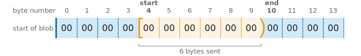
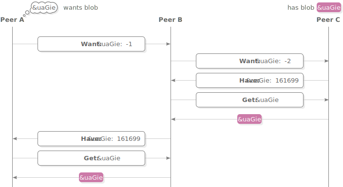

Scuttlebutt Protocol Guide
How Scuttlebutt peers find and talk to each other
Peer connections
Handshake
Once a Scuttlebutt client has discovered the IP address and port number of a peer they connect via TCP to exchange messages. The connection begins with a 4-step handshake to authenticate each peer and set up an encrypted channel.

The handshake uses the Secret Handshake key exchange which is designed to have these security properties:
- After a successful handshake the peers have verified each other’s public keys.
- The handshake produces a shared secret that can be used with a bulk encryption cypher for exchanging further messages.
- The client must know the server’s public key before connecting. The server learns the client’s public key during the handshake.
- Once the client has proven their identity the server can decide they don’t want to talk to this client and disconnect without confirming their own identity.
- A man-in-the-middle cannot learn the public key of either peer.
- Both peers need to know a key that represents the particular Scuttlebutt network they wish to connect to, however a man-in-the-middle can’t learn this key from the handshake. If the handshake succeeds then both ends have confirmed that they wish to use the same network.
- Past handshakes cannot be replayed. Attempting to replay a handshake will not allow an attacker to discover or confirm guesses about the participants’ public keys.
Starting keys
Upon starting the handshake, the client and server know these keys:

1. Client hello

Client sends (64 bytes)
Server verifies
concat(
nacl_auth(
msg: client_ephemeral_pk,
key: network_identifier
),
client_ephemeral_pk
)assert(length(msg1) == 64)
client_hmac = first_32_bytes(msg1)
client_ephemeral_pk = last_32_bytes(msg1)
assert_nacl_auth_verify(
authenticator: client_hmac,
msg: client_ephemeral_pk,
key: network_identifier
)First the client sends their  generated ephemeral key. Also included is an hmac that indicates the client wishes to use their key with this specific instance of the Scuttlebutt network.
generated ephemeral key. Also included is an hmac that indicates the client wishes to use their key with this specific instance of the Scuttlebutt network.
The  network identifier is a fixed 32-byte key. On the main Scuttlebutt network it is:
network identifier is a fixed 32-byte key. On the main Scuttlebutt network it is:
d4a1cb88a66f02f8db635ce26441cc5dac1b08420ceaac230839b755845a9ffbChanging the key allows separate networks to be created, for example private networks or testnets. An eavesdropper cannot extract the network identifier directly from what is sent over the wire, although they could confirm a guess that it is the main Scuttlebutt network because that identifier is publicly known.
The server stores the client’s ephemeral public key and uses the hmac to verify that the client is using the same network identifier.
2. Server hello

Client verifies
Server sends (64 bytes)
assert(length(msg2) == 64)
server_hmac = first_32_bytes(msg2)
server_ephemeral_pk = last_32_bytes(msg2)
assert_nacl_auth_verify(
authenticator: server_hmac,
msg: server_ephemeral_pk,
key: network_identifier
)concat(
nacl_auth(
msg: server_ephemeral_pk,
key: network_identifier
),
server_ephemeral_pk
)The server responds with their own  ephemeral public key and hmac. The client stores the key and verifies that they are also using the same network identifier.
ephemeral public key and hmac. The client stores the key and verifies that they are also using the same network identifier.
Shared secret derivation

Client computes
Server computes
shared_secret_ab = nacl_scalarmult(
client_ephemeral_sk,
server_ephemeral_pk
)
shared_secret_aB = nacl_scalarmult(
client_ephemeral_sk,
pk_to_curve25519(server_longterm_pk)
)shared_secret_ab = nacl_scalarmult(
server_ephemeral_sk,
client_ephemeral_pk
)
shared_secret_aB = nacl_scalarmult(
sk_to_curve25519(server_longterm_sk),
client_ephemeral_pk
)Now that ephemeral keys have been exchanged, both ends use them to derive a shared secret  using scalar multiplication.
using scalar multiplication.
The client and server each combine their own ephemeral secret key with the other’s ephemeral public key to produce the same shared secret on both ends. An eavesdropper doesn’t know either secret key so they can’t generate the shared secret. A man-in-the-middle could swap out the ephemeral keys in Messages 1 and 2 for their own keys, so the shared secret alone is not enough for the client and server to know that they are talking to each other and not a man-in-the-middle.
Because the client already knows the  server’s long term public key, both ends derive a second secret
server’s long term public key, both ends derive a second secret  that will allow the client to send a message that only the real server can read and not a man-in-the-middle.
that will allow the client to send a message that only the real server can read and not a man-in-the-middle.
3. Client accept

Client computes
Server verifies
detached_signature_A = nacl_sign_detached(
msg: concat(
network_identifier,
server_longterm_pk,
sha256(shared_secret_ab)
),
key: client_longterm_sk
)msg3_plaintext = assert_nacl_secretbox_open(
ciphertext: msg3,
nonce: 24_bytes_of_zeros,
key: sha256(
concat(
network_identifier,
shared_secret_ab,
shared_secret_aB
)
)
)
assert(length(msg3_plaintext) == 96)
detached_signature_A = first_64_bytes(msg3_plaintext)
client_longterm_pk = last_32_bytes(msg3_plaintext)
assert_nacl_sign_verify_detached(
sig: detached_signature_A,
msg: concat(
network_identifier,
server_longterm_pk,
sha256(shared_secret_ab)
),
key: client_longterm_pk
)Client sends (112 bytes)
nacl_secret_box(
msg: concat(
detached_signature_A,
client_longterm_pk
),
nonce: 24_bytes_of_zeros,
key: sha256(
concat(
network_identifier,
shared_secret_ab,
shared_secret_aB
)
)
)The client reveals their identity to the server by sending their  long term public key. The client also makes a signature using their
long term public key. The client also makes a signature using their  long term secret key. By signing the keys used earlier in the handshake the client proves their identity and confirms that they do indeed wish to be part of this handshake.
long term secret key. By signing the keys used earlier in the handshake the client proves their identity and confirms that they do indeed wish to be part of this handshake.
The client’s message is enclosed in a secret box to ensure that only the server can read it. Upon receiving it, the server opens the box, stores the client’s long term public key and verifies the signature.
An all-zero nonce is used for the secret box. The secret box construction requires that all secret boxes using a particular key must use different nonces. Using a zero nonce is allowed here because this is the only secret box that ever uses the key sha256(concat( , , )).
Shared secret derivation

Client computes
Server computes
shared_secret_Ab = nacl_scalarmult(
sk_to_curve25519(client_longterm_sk),
server_ephemeral_pk
)shared_secret_Ab = nacl_scalarmult(
server_ephemeral_sk,
pk_to_curve25519(client_longterm_pk)
)Now that the server knows the client’s long term public key, another shared secret  is derived by both ends. The server uses this shared secret to send a message that only the real client can read and not a man-in-the-middle.
is derived by both ends. The server uses this shared secret to send a message that only the real client can read and not a man-in-the-middle.
4. Server accept

Client verifies
Server computes
detached_signature_B = assert_nacl_secretbox_open(
ciphertext: msg4,
nonce: 24_bytes_of_zeros,
key: sha256(
concat(
network_identifier,
shared_secret_ab,
shared_secret_aB,
shared_secret_Ab
)
)
)
assert_nacl_sign_verify_detached(
sig: detached_signature_B,
msg: concat(
network_identifier,
detached_signature_A,
client_longterm_pk,
sha256(shared_secret_ab)
),
key: server_longterm_pk
)detached_signature_B = nacl_sign_detatched(
msg: concat(
network_identifier,
detached_signature_A,
client_longterm_pk,
sha256(shared_secret_ab)
),
key: server_longterm_sk
)Server sends (80 bytes)
nacl_secret_box(
msg: detached_signature_B,
nonce: 24_bytes_of_zeros,
key: sha256(
concat(
network_identifier,
shared_secret_ab,
shared_secret_aB,
shared_secret_Ab
)
)
)The server accepts the handshake by signing a message using their  long term secret key. It includes a copy of the client’s previous signature. The server’s signature is enclosed in a secret box using all of the shared secrets.
long term secret key. It includes a copy of the client’s previous signature. The server’s signature is enclosed in a secret box using all of the shared secrets.
Upon receiving it, the client opens the box and verifies the server’s signature.
Similarly to the previous message, this secret box also uses an all-zero nonce because it is the only secret box that ever uses the key sha256(concat( , , , )).
Handshake complete

At this point the handshake has succeeded. The client and server have proven their identities to each other.
The shared secrets established during the handshake are used to set up a pair of box streams for securely exchanging further messages.
Box stream
Box stream is the bulk encryption protocol used to exchange messages following the handshake until the connection ends. It is designed to protect messages from being read or modified by a man-in-the-middle.
Each message in a box stream has a header and body. The header is always 34 bytes long and says how long the body will be.

Sending
Sending a message involves encrypting the body of the message and preparing a header for it. Two secret boxes are used; one to protect the header and another to protect the body.

Receiving
Receiving a message involves reading the header to find out how long the body is then reassembling and opening the body secret box.

Goodbye
The stream ends with a special “goodbye” header. Because the goodbye header is authenticated it allows a receiver to tell the difference between the connection genuinely being finished and a man-in-the-middle forcibly resetting the underlying TCP connection.

When a receiver opens a header and finds that it contains all zeros then they will know that the connection is finished.
Keys and nonces
Two box streams are used at the same time when Scuttlebutt peers communicate. One is for client-to-server messages and the other is for server-to-client messages. The two streams use different keys and starting nonces for their secret boxes.

The starting nonce is used for the first header in the stream (“secret box 1” in the above figures), then incremented for the first body (“secret box 2”), then incremented for the next header and so on.
RPC protocol
Scuttlebutt peers make requests to each other using an RPC protocol. Typical requests include asking for the latest messages in a particular feed or requesting a blob.
The RPC protocol can interleave multiple requests so that a slow request doesn’t block following ones. It also handles long-running asynchronous requests for notifying when an event occurs and streams that deliver multiple responses over time.
Similar to the box stream protocol, the RPC protocol consists of fixed-length headers followed by variable-length bodies. There is also a goodbye message which is just a zeroed out header.

Both peers make requests to each other at the same time using the pair of box streams that have been established. The box streams protect the RPC protocol from eavesdropping and tampering.

Header structure
RPC headers contain a set of flags to say what type of message it is, a field specifying its length and a request number which allows matching requests with their responses when there are several active at the same time.

Request format
To make an RPC request, send a JSON message containing the name of the procedure you wish to call, the type of procedure and any arguments.
The name is a list of strings. For a top-level procedure like createHistoryStream the list only has one element: ["createHistoryStream"]. Procedures relating to blobs are grouped in the blobs namespace, for example to use blobs.get send the list: ["blobs", "get"].
There are two types of procedure used when Scuttlebutt peers talk to each other:
- Source procedures return multiple responses over time and are used for streaming data or continually notifying when new events occur. When making one of these requests, the stream flag in the RPC header must be set.
- Async procedures return a single response. Async responses can arrive quickly or arrive much later in response to a one-off event.
For each procedure in the RPC protocol you must already know whether it is source or async and correctly specify this in the request body.
Source example
This RPC message shows an example of a createHistoryStream request:
{
"name": ["createHistoryStream"],
"type": "source",
"args": [
{
"id": "@FCX/tsDLpubCPKKfIrw4gc+SQkHcaD17s7GI6i/ziWY=.ed25519"
}
]
}createHistoryStream is how Scuttlebutt peers ask each other for a list of messages posted by a particular feed. It has one argument that is a JSON dictionary specifying more options about the request. id is the only required option and says which feed you are interested in.
Because this is the first RPC request, the request number is 1. The next request made by this peer will be numbered 2. The other peer will also use request number 1 for their first request, but the peers can tell these apart because they know whether they sent or received each request.
Now the responder begins streaming back responses:
{
"key": "%XphMUkWQtomKjXQvFGfsGYpt69sgEY7Y4Vou9cEuJho=.sha256",
"value": {
"previous": null,
"author": "@FCX/tsDLpubCPKKfIrw4gc+SQkHcaD17s7GI6i/ziWY=.ed25519",
"sequence": 1,
"timestamp": 1514517067954,
"hash": "sha256",
"content": {
"type": "post",
"text": "This is the first post!"
},
"signature": "QYOR/zU9dxE1aKBaxc3C0DJ4gRyZtlMfPLt+CGJcY73sv5abKK
Kxr1SqhOvnm8TY784VHE8kZHCD8RdzFl1tBA==.sig.ed25519"
},
"timestamp": 1514517067956
}{
"key": "%R7lJEkz27lNijPhYNDzYoPjM0Fp+bFWzwX0SmNJB/ZE=.sha256",
"value": {
"previous": "%XphMUkWQtomKjXQvFGfsGYpt69sgEY7Y4Vou9cEuJho=.sha256",
"author": "@FCX/tsDLpubCPKKfIrw4gc+SQkHcaD17s7GI6i/ziWY=.ed25519",
"sequence": 2,
"timestamp": 1514517078157,
"hash": "sha256",
"content": {
"type": "post",
"text": "Second post!"
},
"signature": "z7W1ERg9UYZjNfE72ZwEuJF79khG+eOHWFp6iF+KLuSrw8Lqa6
IousK4cCn9T5qFa8E14GVek4cAMmMbjqDnAg==.sig.ed25519"
},
"timestamp": 1514517078160
}Each message posted by the feed is sent back in its own response. This feed only contains two messages. To signal the end of the stream, the responder sends an RPC message with both the stream and end/err flags set and a JSON body of true.
trueAsync example
The only public async procedure is blobs.has, which peers use to ask each other whether they have a particular blob.
In this example the requester is asking the responder if they have blob &WWw4tQJ6…:
{
"name": ["blobs", "has"],
"type": "async",
"args": ["&WWw4tQJ6ZrM7o3gA8lOEAcO4zmyqXqb/3bmIKTLQepo=.sha256"]
}The responder does in fact have this blob so they respond with true. Because this is an async procedure and not a stream, there is only one response and no need to close the stream afterwards:
trueError example
Let’s take the previous example and introduce a programming mistake to see how the RPC protocol handles errors:
{
"name": ["blobs", "has"],
"type": "async",
"args": ["this was a mistake"]
}{
"name": "Error",
"message": "invalid hash:this was a mistake",
"stack": "…"
}Most importantly, the response has the end/err flag set to indicate that an error occurred. The original Scuttlebot implementation also includes an error message and a JavaScript stack trace.
For source type procedures an error will also end the stream because the end/err flag has the dual purpose of ending streams and indicating that an error occurred.
List of RPC procedures
createHistoryStream
As shown above, createHistoryStream asks a peer for a list of messages posted in a particular feed.
{
"name": ["createHistoryStream"],
"type": "source",
"args": [
{
"id": "@FCX/tsDLpubCPKKfIrw4gc+SQkHcaD17s7GI6i/ziWY=.ed25519",
"sequence": 2,
"limit": 1,
"live": false,
"old": true,
"sync": false,
"keys": true
}
]
}createHistoryStream takes one argument which is a dictionary of additional options that controls how the feed is returned. Valid options are:
| id | ID of the feed to return messages from. Required. |
| sequence | Only return messages later than this sequence number. If not specified then start from the very beginning of the feed. |
| limit | Maximum number of messages to return. If the limit is exceeded only the earliest messages are returned. Default: unlimited. |
| live | If true, keep the stream alive and send new messages as they are posted. If false, end the stream after messages are sent and don’t wait for new ones. Default: false. |
| old | Used together with live. If false, don’t send existing messages posted by this feed, only send new messages as they arrive. If true, start by sending existing messages already posted by this feed. Default: true. |
| keys | If true, also include message IDs and timestamps of when each message was received by this peer. If false, just send the messages themselves. Default: true. |
Here is a comparison of createHistoryStream responses with keys set to true and false:
{
"name": ["createHistoryStream"],
"type": "source",
"args": [
{
"id": "@FCX/tsDLpubCPKKfIrw4gc+SQkHcaD17s7GI6i/ziWY=.ed25519",
"keys": true
}
]
}{
"key": "%XphMUkWQtomKjXQvFGfsGYpt69sgEY7Y4Vou9cEuJho=.sha256",
"value": {
"previous": null,
"author": "@FCX/tsDLpubCPKKfIrw4gc+SQkHcaD17s7GI6i/ziWY=.ed25519",
"sequence": 1,
"timestamp": 1514517067954,
"hash": "sha256",
"content": {
"type": "post",
"text": "This is the first post!"
},
"signature": "QYOR/zU9dxE1aKBaxc3C0DJ4gRyZtlMfPLt+CGJcY73sv5abKK
Kxr1SqhOvnm8TY784VHE8kZHCD8RdzFl1tBA==.sig.ed25519"
},
"timestamp": 1514517067956
}{
"name": ["createHistoryStream"],
"type": "source",
"args": [
{
"id": "@FCX/tsDLpubCPKKfIrw4gc+SQkHcaD17s7GI6i/ziWY=.ed25519",
"keys": false
}
]
}{
"previous": null,
"author": "@FCX/tsDLpubCPKKfIrw4gc+SQkHcaD17s7GI6i/ziWY=.ed25519",
"sequence": 1,
"timestamp": 1514517067954,
"hash": "sha256",
"content": {
"type": "post",
"text": "This is the first post!"
},
"signature": "QYOR/zU9dxE1aKBaxc3C0DJ4gRyZtlMfPLt+CGJcY73sv5abKK
Kxr1SqhOvnm8TY784VHE8kZHCD8RdzFl1tBA==.sig.ed25519"
}blobs.get
blobs.get asks a peer to send you the contents of a blob. There is one argument which is the blob ID:
{
"name": ["blobs", "get"],
"type": "source",
"args": ["&uaGieSQDJcHfUp6hjIcIq55GoZh4Ug7tNmgaohoxrpw=.sha256"]
}Blobs are referenced by the hash of their contents. The blob ID format is similar to that of feed IDs, but with & on the front and .sha256 on the end.
Now the responder begins streaming back the contents of the blob. Each response has a body type of binary and contains a piece of the blob, starting from the beginning.
This particular blob is 161,699 bytes long and the responder has decided to send it in pieces of 65,536 bytes each. That means two full pieces of 65,536 bytes will be sent and a final piece with the remaining 30,627 bytes.
ffd8ffe000104a46494600010200000100010000ffdb0043
00080606070605080707070909080a0c140d0c0b0b0c1912
130f141d1a1f1e1d1a1c1c20242e2720222c231c1c283729
2c30313434341f27393d38323c2e333432ffdb
bae49231ce6874d0d4999e66b9f317ef2b20dc07a8ef8ad3
b5b9330f349057a723a9f6359329b89252d2614918551d3e
b4915bb2a12ce1467b77351ecac5f3dce8165b6907cf310d
e8d83519b58d1cc81f7311838c67f2ac291dc6
caf507ad376364afca7df3c558e48e07cbe9d68047f778f6
a057220a36e08c1a79881438ede94ec83d074a70519c8345
839885a25e31cd39536aae573dc7a54b9c1e339a724ac8b2
051c483072074cfe94587cc3148eadd73e9438
Finally, the stream ends with a JSON message of true with the end/err flag set:
trueUpon receiving the blob the requester should check that what they received matches the sha256 checksum they asked for.
blobs.get has an alternate form where the first argument is a JSON dictionary of options:
{
"name": ["blobs", "get"],
"type": "source",
"args": [
{
"hash": "&uaGieSQDJcHfUp6hjIcIq55GoZh4Ug7tNmgaohoxrpw=.sha256",
"size": 161699,
"max": 200000
}
]
}Valid options are:
| hash | ID of the blob. Required. |
| size | Expected size of the blob in bytes. If the blob is not exactly this size then reject the request. Optional. |
| max | Maximum size of the blob in bytes. If the blob is larger then reject the request. Only makes sense to specify max if you don’t already know size. Optional. |
This form allows the receiver to reject the request if the blob is not the expected size or too large. When a request is rejected the responder sends back a single message with the end/err flag set containing a JSON error message.
blobs.getSlice
blobs.getSlice works like blobs.get but rather than receiving the entire blob, the requester specifies a start and end point and the responder only sends back bytes within that range:
{
"name": ["blobs", "getSlice"],
"type": "source",
"args": [
{
"hash": "&uaGieSQDJcHfUp6hjIcIq55GoZh4Ug7tNmgaohoxrpw=.sha256",
"start": 65536,
"end": 65584
}
]
}bae49231ce6874d0d4999e66b9f317ef2b20dc07a8ef8ad3
b5b9330f349057a723a9f6359329b89252d2614918551d3e
trueStart and end are byte offsets from the start of the blob and form a half-open interval, meaning the end byte is not included.
Specifying start = 0 means start from the beginning of the blob. Specifying end = size of the blob means keep going all the way to the end of the blob.
blobs.getSlice also accepts the size and max options, which work the same as in blobs.get. These two options refer to the size of the entire blob, not the range requested.
blobs.has
blobs.has is how you ask a peer whether they have a particular blob:
{
"name": ["blobs", "has"],
"type": "async",
"args": ["&uaGieSQDJcHfUp6hjIcIq55GoZh4Ug7tNmgaohoxrpw=.sha256"]
}trueIf they don’t have the blob they will instead reply false.
blobs.has is the only public RPC procedure of type async so remember to set the type correctly in the request and not set the stream flags.
Multiple blobs can be queried in one go by giving a list of blob IDs:
{
"name": ["blobs", "has"],
"type": "async",
"args": [
[
"&uaGieSQDJcHfUp6hjIcIq55GoZh4Ug7tNmgaohoxrpw=.sha256",
"&WWw4tQJ6ZrM7o3gA8lOEAcO4zmyqXqb/3bmIKTLQepo=.sha256",
"&G1qgWe3fuJgZR0CxAocN2SDUYUcveLWQzjpXG0GVH5U=.sha256"
]
]
}The response is a list where each true or false corresponds to a blob that was queried:
[true, true, false]blobs.changes
blobs.changes notifies the requester every time the responder acquires a new blob.
{
"name": ["blobs", "changes"],
"type": "source",
"args": []
}Later, when the responder acquires a new blob it sends the blob ID back. Responses use the RPC string message type, not JSON:
&ldhEQXm0KOzFrkTlVSELj+yKULwyHdCskYc93dJdooM=.sha256&ENoWuph/CdIvhEdiyOjrAS8nLAUpjneNqPXJNs7ORH4=.sha256&qpC5X1GanJcw6K2UavJw9JNToPCLcUhbaTSY+vSnz+o=.sha256Once started the stream will stay open until the requester cancels it:
truetrueblobs.createWants
blobs.createWants asks a peer to tell you which blobs they want, and also allows the peer to tell you which blobs they have (like blobs.changes).
{
"name": ["blobs", "createWants"],
"type": "source",
"args": []
}{}Responding with an empty dictionary {} means they don’t currently want any blobs. Later, when they want a particular blob the responder will send another response back:
{"&uaGieSQDJcHfUp6hjIcIq55GoZh4Ug7tNmgaohoxrpw=.sha256": -1}The -1 means the responder wants this blob themselves. -2 means they know someone who wants the blob. -3 means they know someone who knows someone who wants the blob, and so on.
Implementations can pick a limit and ignore blob requests that come from further out than their threshold. The reference implementation forwards requests with -1 or -2 to peers it is currently connected to, but does not forward requests with -3 or further out. When forwarding a request, remember to subtract one from the number so that the request does not keep propagating through the network in an infinite loop.
The responder can also say that they now have a particular blob, and its size in bytes:
{"&uaGieSQDJcHfUp6hjIcIq55GoZh4Ug7tNmgaohoxrpw=.sha256": 161699}If the requester wishes to cancel the stream, they can do so with:
truetrueWhen Scuttlebutt peers connect, they usually set up a pair of blobs.createWants streams to let each other know which blobs they want and have. When a peer sees that they have a blob that their partner (or someone they know) wants, they will send a have message via their blobs.createWants stream and their partner can retrieve it with blobs.get or blobs.getSlice.
